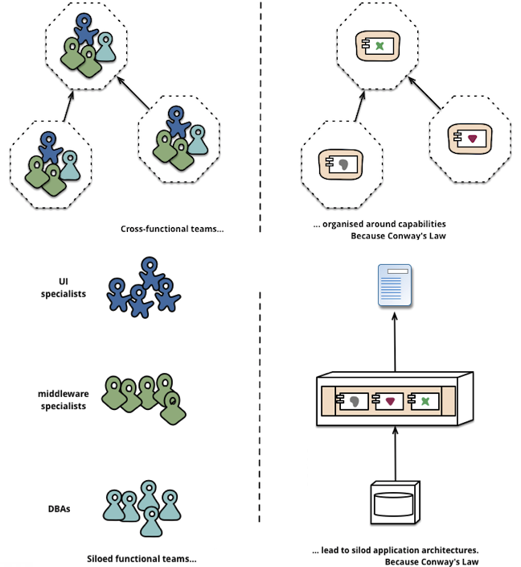
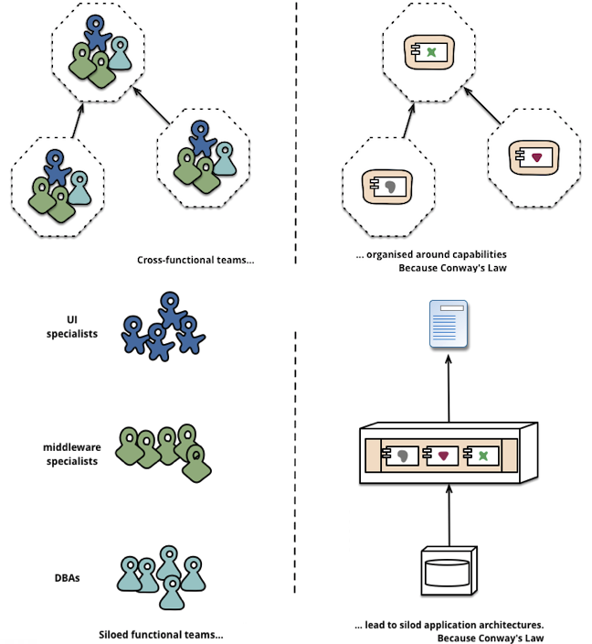

HOW DO YOU INVENT?
Smidig 2016

Conway's lov

“Organizations which design systems ... are constrained to produce designs which are copies of the communication structures of these organizations”


Digitalisering
DevOps
Microservices
Har du ikke lest hele artikkelen?
Conway's konsekvens (corollary)
“Flexibility of organization is important
to effective design.”
“There is a homomorphism from the linear graph of a system to the linear graph of its organization.”
 


“Microservices allow organizations to align the architecture of their systems to the structure of their teams.”
Mikrotjenester


Conway om kontinuerlig forbedring
“Given any system design, someone someday will find a better one to do the same job.”
“There's never enough time to do something right, but there's always enough time to do it over.”
“Such an appearance of uncertainty is unflattering, and the very act of voluntarily abandoning a creation is painful and expensive.”
Conway om store systemer og store organisasjoner
“To the extent that an organization is not completely flexible in its communication structure, that organization will stamp out an image of itself in every design it produces. The larger an organization is, the less flexibility it has and the more pronounced is the phenomenon.”
“The structures of large systems tend to disintegrate during development, qualitatively more so than with small systems.”
Årsak #1
“The realization that the system will be large, together with certain pressures in their organization, make irresistible the temptation to assign too many people to a design effort.”
“Two men working for a year or one hundred men working for a week (at the same hourly cost per man) are (not) resources of equal value.”
“From experience we know that the two men, if they are well chosen and survive the experience, will give us a better system.”
Brooks' lov

“Adding manpower to a late software project makes it later.”
Årsak #2
“Application of the conventional wisdom of management to a large organization causes its communication structure to disintegrate.”
“Even in a moderately small organization it becomes necessary to restrict communication in order that people can get some "work" done.”

“Communication is a sign of dysfunction... We should be trying to figure out a way for teams to communicate less with each other, not more.”
Årsak #3
“Homomorphism insures that the structure of the system will reflect the disintegration which has occurred in the organization.”
Hva kan vi lære av Conway?
How do you invent?
Takk for meg!